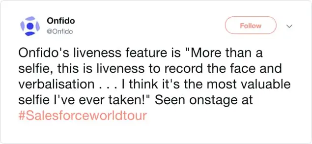
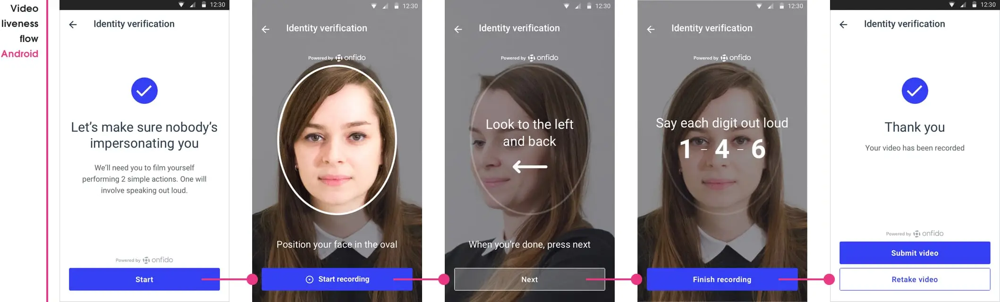
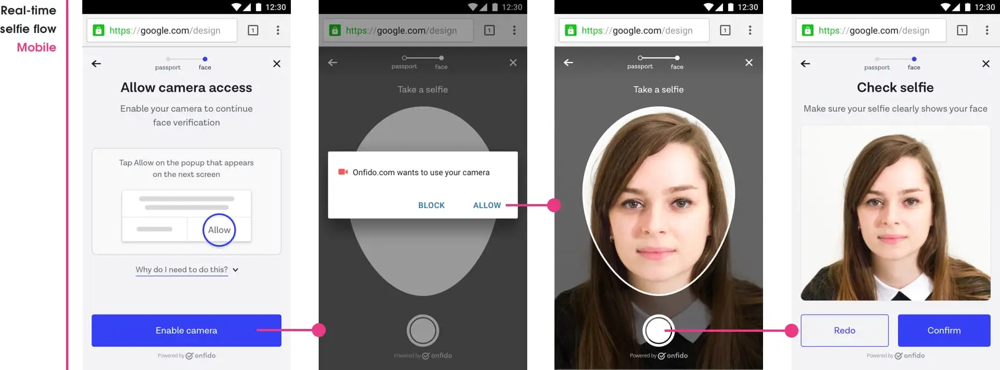
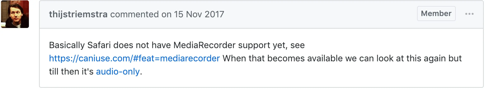
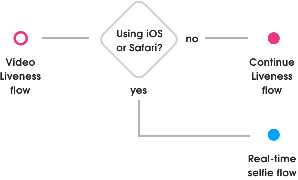

Reducing identity fraud
Read time: 10 minutes
Company:
Onfido — London
My role:
Product Designer
Timeframe:
Three months
Skills:
UX/UI design, prototyping, product planning, usability testing
The problem
An ongoing challenge in the identity verification space is to continually evolve to fight new levels of fraud. The industry had moved towards requiring users to submit a selfie with an ID document so a facial comparison could be performed, but fraudsters were starting to find ways around this. To combat this we implemented Video Liveness in our Android and iOS identity verification SDK (software development kit), with users required to video-record themselves performing two facial actions — moving their head to the side and speaking random numbers shown on the screen. This was to ensure that the people were physically present in-the-moment and which was much harder to spoof by fraudsters.
Clients in high-risk domains were starting to request this fraud deterrence feature to be included within our web SDK, and so my team found itself in the precarious position of having to translate the native experience of Video Liveness to the web SDK — before we were totally confident it could be done properly.
TL;DR
The solution
Translating the native experience to web was technically no easy feat. I had to design ways around web and hardware limitations, so that people’s identity verification flow was undisrupted.
By collaborating closely as a team we were able to provide alternative Video Liveness flows to people regardless of their device and/or browser limitations. We were able to do this by providing fallback solutions based on three user device groups.
1. Device supports video streaming and recording
These people were provided with the full Video Liveness experience
2. Device only supports video streaming
These people could take a selfie from a video streaming feed
3. Device doesn’t support video streaming or recording
These people could still take a selfie using their mobile phones native camera
Using this cascading fallback method, we provided clients with the most robust fraud detection method available based on an individual customer’s device. This meant more people were onboarded safely, and less fraudsters being able to spoof the system.

Read the in-depth casestudy below 🤓
A little context
Background
When someone rents a car or opens a bank account online, chances are their identity will be checked by Onfido. By providing ID documentation such as a passport or driving licence and combining it with facial recognition technology, Onfido checks identities for companies ranging from Square to Zipcar to Revolut.
With clients across such a diverse range of industries, our users were also as varied — our product could be used by people wanting to open a bank account to people wanting to hire a car. Users wanted to get through the verification process quickly and needed to be able to trust us with their personal information, but we also had to keep in mind users from different cultures and socio-economic backgrounds. We also designed with an “anti-persona” in mind — the fraudster, who made us always think of how our solutions could be worked around.
Native video liveness experience
People video-recording themselves performing two facial movements had been part of our identity verification experience on the Android and iOS SDK for twelve months. This was done to reduce the ability of fraudsters to claim to be someone else by submitting a fraudulent ID document and selfie to illegally gain access to services. It’s much harder to spoof an identity verification system with a video-recording of randomised facial movements.
The business desperately wanted this innovation on the web SDK, but until web-browser support caught up with native device video-recording capabilities the web SDK would always lag behind in deterring fraud.

An open-sourced hero?
WebRTC
WebRTC (real-time communications) is an open source initiative started by Google, which provides web-browsers the ability to stream and record video. Google’s Chrome browser, Android phones, and Mozilla's Firefox browsers supported WebRTC, but Apple’s Safari and iPhones did not. Without Apple support, we were reluctant to create two different experiences across Google and Apple products.
In late 2017 Apple finally released support for WebRTC. 🎉 We naively assumed this meant they now supported both web-based video-streaming and video-recording — how wrong we were…
Real-time selfie capture
Our first use of WebRTC was designing a Real-time selfie capturing feature. We removed the ability to upload a selfie and replaced it with a video stream of a devices camera view — we could now get people to capture a selfie from the video stream.

We were now able to:
- Keep the entire experience within the browser without people having to switch to the native camera or upload files (both attack spots for fraud spoofing)
- Overlay UI elements on the web-camera view for better visual guidance (this can’t be done on a native camera view)
This feature was starting to get us closer to the native SDK experience, but we still knew we needed to be able to video record the stream to make fraud attempts harder.
Video assumptions
With our assumption that Apple’s support of WebRTC included video-recording, we added Video Liveness to our web SDK roadmap for further discovery later in the quarter.
This all changed when a large potential client became aware that Video Liveness was on the roadmap and dangled the promise of signing with Onfido if we had this feature live by the end of the quarter (we were already three weeks in 😰). Without consulting with us, the business said that it could be done and we found ourselves having to implement Video Liveness with little preparation.
First of many
The setback
In our technical discovery we discovered the bombshell — Apple Safari and iOS did not yet support video-recording. 😭
We were back to square one… with the addition of a large client and business stakeholders breathing down our backs.

Alternative options
As a team we brainstormed three initial options to get around this:
- Use a 3rd party service that claimed they could record video streams (very expensive though and would require integration time)
- Only have the Video Liveness feature on Android and Chrome browsers until Apple supported video-recording
- Show each liveness challenge first and then get people to use the native video camera to record the challenge
We all agreed to start exploring option three, as we believed this to be the quicker to implement in the limited time we had.
First iteration
Upfront challenges
The current native Video Liveness flow had one introduction screen and then each of the two challenges that followed had bespoke UI overlayed over the camera-view for guidance.
As we could not overlay UI on top of a native camera screen the team discussed two options:
1. Show challenges upfront
Show both challenges first, switch to the native camera, and then people video-record themselves performing actions
2. Intersperse challenges
Show first challenge, switch to the native camera, video-record action, and repeat for second challenge
Challenging the speed impulse
The team wanted to go with option one as it would be the quickest to technically implement, but I was in complete disagreement with this.
I felt this option was the worst of the two experiences as:
- We were putting extra cognitive stress on people to have to remember two actions
- We could be adding to people’s already anxious state, as they may not remember if they are performing the challenge correctly
- Onfido sold itself on having a great user experience that differentiates us from our competitors, but if we went ahead with this option I believed we would be lowering our UX standards
- We could not just pass this off as an “edge case”, as this would be experienced by all Safari and iOS users
After another discussion based on my objections, the team agreed to start exploring the second option instead. I still had my reservations about this option as well, but I knew I had to be a little pragmatic with our situation.
Another setback
While the team was exploring this option, the Product Manager and myself were doing some testing with native video-recording on iPhones and we discovered our next problem — a video-recording file size could be as high as 18 MB! This was way too large to upload to our servers, so now the native camera option was off the table too. We were back to square one. 😩
For the second time in a week the team sat down to brainstorm options. The mood was slightly down, but we knew we had to push through and find a way out of this.
Options from brainstorm session
- Wait for Apple to fully support video-recording and only build the feature for Android and Chrome
- Advise the client that Video Liveness could not be done fully because of the current web limitations with Apple products
- Use the native camera “burst mode” to take numerous shots of the user performing an action
- Make our Real-time selfie capture feature the fallback option for Safari and iOS
We all thought the Real-time selfie capture fallback was a great tradeoff and so excitedly got to work on our next iteration.
Second iteration
Real-time selfie fallback
The Real-time selfie fallback meant we could still build the Video Liveness feature and still provide a level of fraud prevention to clients whose customers were using Safari and iOS.

What about desktop users?
So what would happen to people who started on a desktop? Working with the developers I mapped out a flow for desktop users based on device and browser detection methods.
Continue on desktop
- Users device + browser does allow Liveness video-recording / Real-time selfie capture
- User has a webcam
- Action: User continues verification on their desktop
Switch to mobile (cross-device)
- Users browser / device does not allow Liveness video-recording / Real-time selfie capture
- User has no webcam
- Action: User needs to switch to their mobile to continue verification
Note: The cross-device feature allows desktop users to continue verification process on their mobile.
Cross-device confusion
There was one particular cross-device use-case where a desktop user with a Safari browser would be told they’d need to take a selfie (the Real-time selfie flow) and then, maybe because their webcam fails, they switch to their Android mobile where they’d now be asked to video-record two challenges (Video Liveness flow). This person would be totally unaware that they have moved from the Real-time selfie capture flow to the Video Liveness flow. This ambiguity could lead to confusion as their expectation of what to do was now wrong — with no apparent reason as to why.
Team discussion around this type of stress-case led us to decide that if a desktop user was on the Real-time selfie capture flow, and they had to switch to an Android mobile, then to avoid any confusion they would just stay in the Real-time selfie capture flow.
Including the many
This then lead us to an obvious realisation — not everyone has the latest updated browsers or devices for video-recording to work. For example a person may have an Android phone, but if they had an old model or they hadn’t updated to the latest Chrome browser, they would not be able to do Video Liveness. 😞
We had been concentrating so much on the latest browser technology that we had forgotten about the people without access to this technology. After some brainstorming we arrived at the “fallback stack” solution.
Third iteration
Fallback stack
All users would start at the Video Liveness level, if their device / browser didn’t support this they would then drop to the next level, and so on. There were four levels of fallback.
The creation of the fallback stack meant regardless of people’s device or browser type we could still serve them the best fraud prevention level available. It also meant that a client would not see drop-off numbers due to browser / device incompatibility.
Ending dead-ends
In order for the fallback stack method to work smoothly we needed to make sure that as many technical dead-ends as possible were rectified with proper alert messaging.
We had four dead-ends in mind that people needed to be able to recover from:
1. Browser webcam malfunction
- Desktop: Continue on mobile with Cross-device option
- Mobile: Continue with use of native camera to take selfie
2. Video recording file too large
- Redo video recording of liveness challenges
3. Timeout A: User does not start using browser webcam after 12 seconds
- Desktop: Continue on mobile with Cross-device experience option (or ignore)
- Mobile: Continue with use of native camera to take selfie (or ignore)
4. Timeout B: User takes longer than 20 second limit to record video actions
- Redo video recording of liveness challenges
Visual styling
User interface
Layout constraints
The web SDK interface had been designed to be fully visible on device screens (no scrolling required at the default size) meaning there was a limit to the amount of space for UI elements — especially on smaller mobile screens. The web SDK camera screen UI had two particular spacing constraints to keep in mind.
Browser chrome
Different browsers have different chrome requirements taking precious screen space. For instance Safari has browser chrome top and bottom which means a very restricted space to work with on iPhone 4 (our minimum screen size to design for).
Face oval guidance
From past user testing sessions we had found that the smaller the face oval the further away people had to hold their mobile phones to get their face inside it. We now had guidelines that set a minimum face oval-size and so this needed to be followed.
Alert messages
As over half of our users used mobile I decided to restyle the alert messages to work better for mobile. Replacing the actionable link-styling for nice big buttons made for easier usability and allowed to place better call to actions for people to view. This also gave me the chance to rewrite the alert messaging so they had clear headings, told people what was happening, and gave them a next option.
Video Liveness
Outcome
+10%
of all web facial checks use Video Liveness
~1600
fraud attempts detected with Video Liveness
+7
new clients signed due to Video Liveness
Reflections
Better communication
We knew we needed to improve our communication between our team and stakeholders on the effort it takes to ship features. We also wanted to understand what types of pressures they were dealing with when selling our SDK to clients. We decided to work a lot closer with them by regularly attending client calls and visits, and putting processes into place to enable better push back against decisions before they were made. We hoped this would create better mutual understanding between product and sales and our respective challenges and insights.
Products aren’t static
We should always be learning and improving products, but in this case there was no time to iterate on issues we knew of. Previous user testing had shown that people could get confused with how far to turn their head, some held the phone to their mouth to say the numbers, and some would tap the continue button without doing the challenge. It was seen as quicker and easier from a business point of view to just “copy and paste” the current native SDK version. This is a tradeoff we had to make to deliver fast, but it also meant delivering a feature with known user experience issues — it’s never a good feeling to ship something you know could be a lot better.
Thinking outside the bubble
Thinking about people without the latest devices or browsers had been forgotten in the beginning — I’d been so blinded by the new shiny technology that I’d left a large and important group of people out of the design. I really took this as a failure on my part — it made me all the more determined to address how my designs affect different people and find ways to include them in my design process from now on.